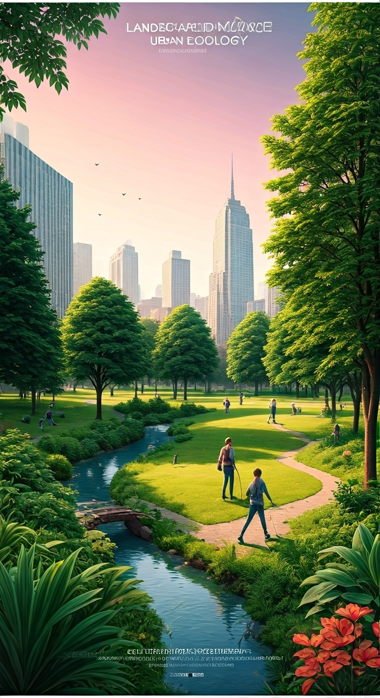
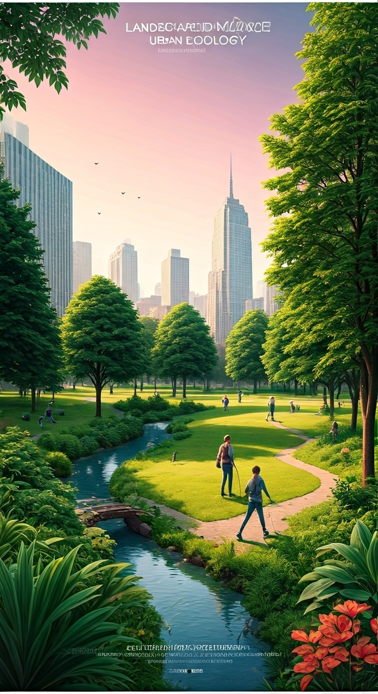

Activities
Interactive exercises: Poster, Speech, Presentation, Quiz, Workshop, Field Activities.
Back to HomePoster Activity
Create visually appealing posters on topics like environmental ethics, sustainability, and biodiversity.
- Choose a topic or theme relevant to Module 2.
- Use colors, diagrams, and images to explain ideas.
- Include facts, statistics, and examples.
- Present the poster in class or online gallery.
 


Speech Activity
Prepare and deliver speeches on environmental topics to develop communication and presentation skills.
- Select a relevant topic from Module 2.
- Research facts, statistics, and real-world examples.
- Practice clear and confident delivery.
- Use visual aids or slides if required.
- Time limit: 3–5 minutes per speech.

Presentation Activity
Create multimedia presentations to explain Module 2 topics to peers.
- Prepare slides on environmental ethics, biodiversity, or sustainable engineering.
- Include images, diagrams, and short videos.
- Use bullet points and concise text.
- Practice speaking along with slides for effective delivery.
- Share presentations in class or online platforms.

Quiz Activity
Test knowledge and encourage learning through quizzes.
- Create 10–20 questions from Module 2 topics.
- Use multiple choice, true/false, or short answer formats.
- Include a scoring system to track performance.
- Conduct quizzes in groups or online.
- Discuss answers and provide explanations after the quiz.

Workshop Activity
Hands-on workshops help understand sustainable engineering and biodiversity practically.
- Build models of eco-friendly houses or green infrastructure.
- Practice water conservation, recycling, or energy-saving methods.
- Document observations and learning outcomes.
- Work in teams for collaborative learning.
- Showcase workshop results via photos or reports.

Field Activity
Conduct outdoor studies to understand ecosystems, biodiversity, and environmental challenges.
- Observe local flora and fauna and document findings.
- Conduct water, soil, or air quality assessments.
- Map habitats, identify invasive species, or track biodiversity.
- Prepare reports or presentations based on field data.
- Share experiences and recommendations for conservation.

×